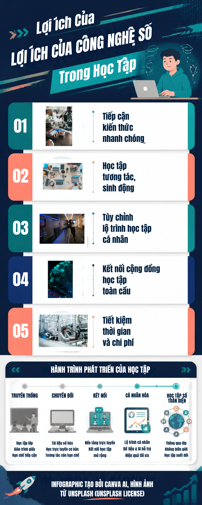

Lợi ích của công nghệ số trong học tập
Công nghệ số giúp người học tiếp cận nguồn kiến thức phong phú, học tập linh hoạt ở mọi nơi và dễ dàng trao đổi, cộng tác. Các công cụ trực tuyến còn hỗ trợ cá nhân hóa việc học và giúp bài học trở nên trực quan, sinh động hơn.
